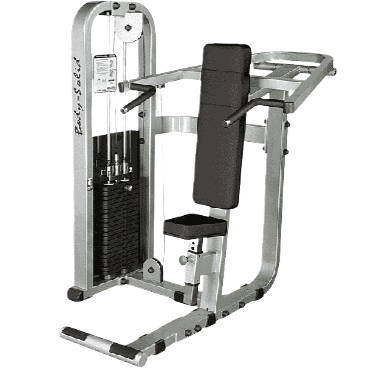
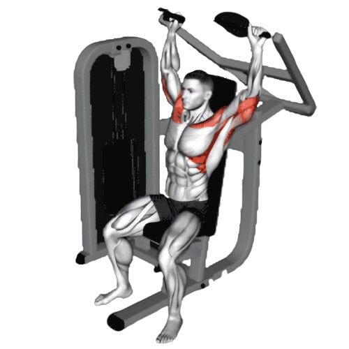
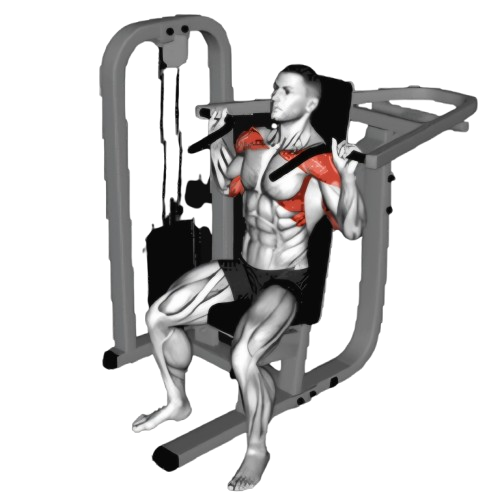

숄더 프레스

- 머신의 손잡이를 잡고, 손이 어깨 높이에 오도록 조절한다.
- 천천히 팔을 위로 밀어 머신 손잡이를 머리 위로 들어 올린다. 팔이 완전히 펴지지 않도록 살짝 굽힌 상태로 유지한다.
- 팔이 거의 펴졌을 때, 어깨 근육을 수축하면서 1~2초간 유지한다.
- 이때 호흡은 뱉는다.
- 천천히 팔을 내려 시작 자세로 돌아온다. 근육의 긴장을 유지하면서 천천히 내리는 것이 중요하다.
- 이때 호흡은 마신다.

주의사항
- 팔이 과도하게 뒤로 젖혀지지 않도록 주의한다. 어깨에 과도한 부담이 갈 수 있어 부상의 원인이 될 수 있다.
- 지나치게 무거운 중량은 잘못된 자세를 유발할 수 있어 부상의 원인이 된다.
운동부위 및 효과
- 삼각근, 승모근, 상완삼두근, 상부 가슴근
- 삼각근을 강화하여 어깨가 더욱 크고 넓게 보이게 한다.